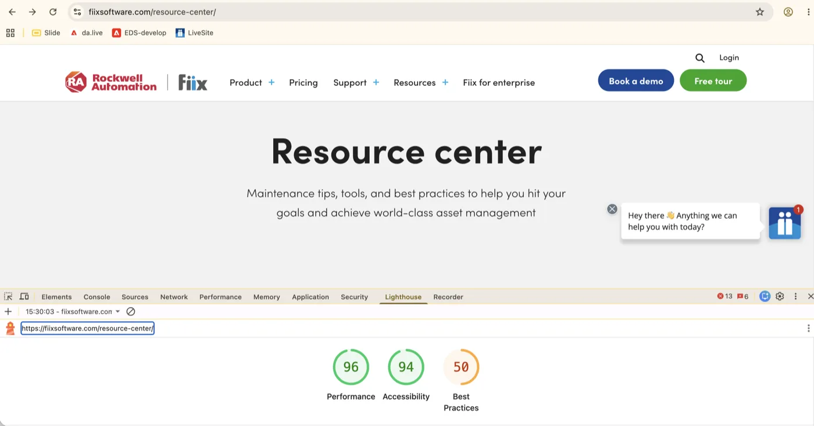
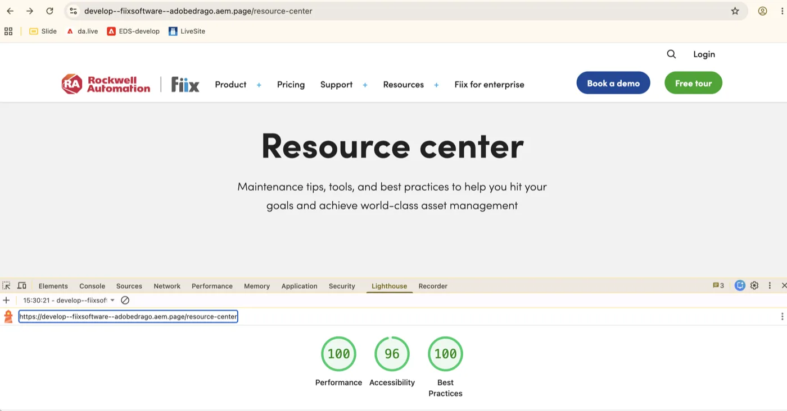
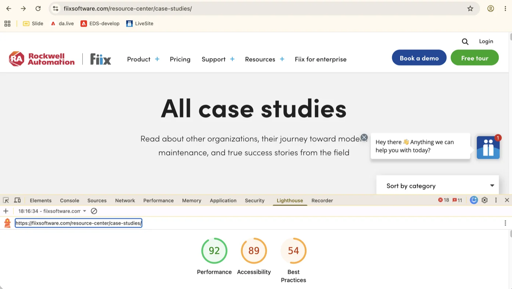
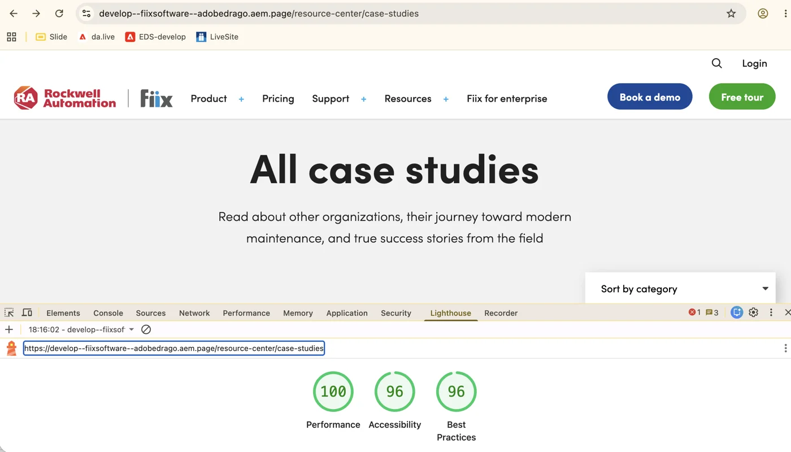
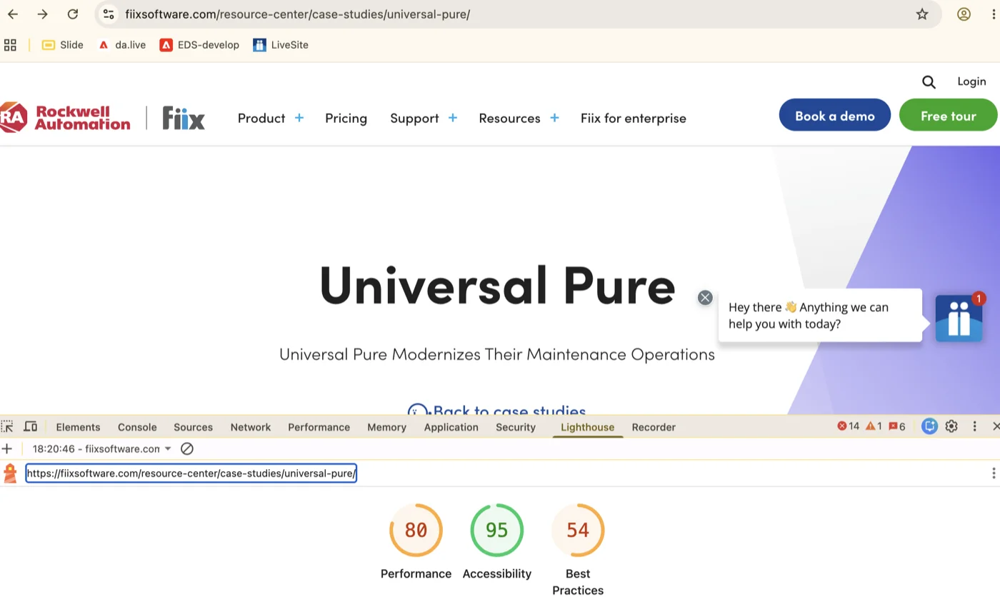
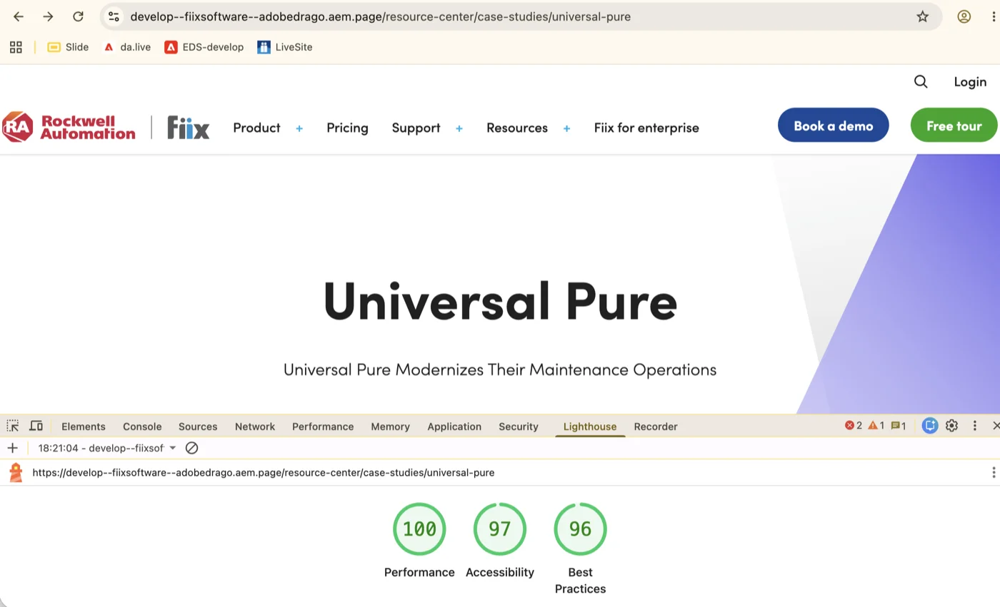
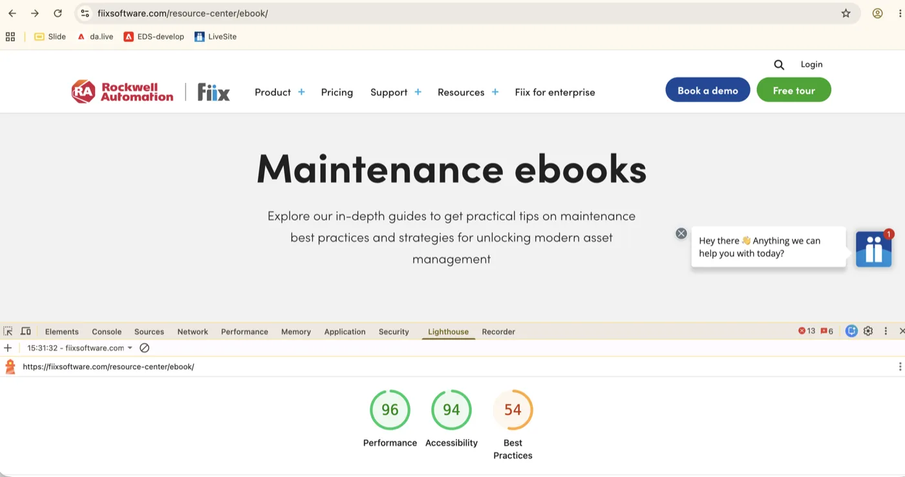
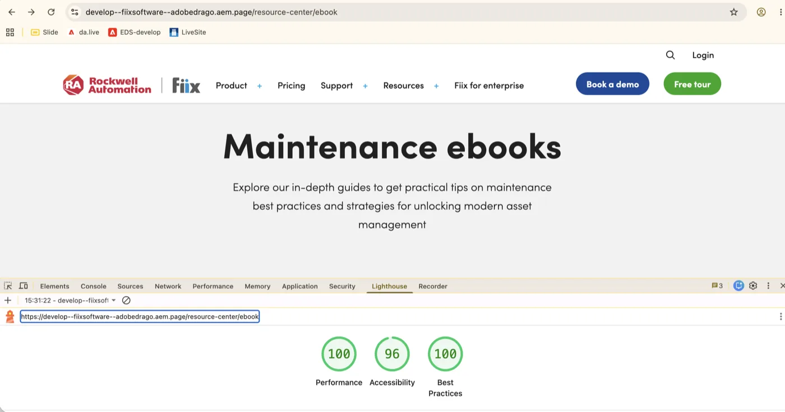

Fiix Software EDS Pilot
A page-template-driven migration of fiixsoftware.com's marketing site off WordPress onto Edge Delivery Services, built on the standard aem-boilerplate and authored through DA.live — architecture, Resources pilot journeys (Ebooks, Case studies, Blog), blocks, and the page-by-page migration status.
Purpose
- Fiix Software → Edge Delivery Services migration pilot: rebuild fiixsoftware.com's WordPress-based marketing site (home, pricing, enterprise, training, support, contact, product-feature, case-study, and campaign landing pages) block-by-block, pixel-matched to the live source.
Core engineering requirements
- Use the EDS block-based development model only (
scripts/aem.js+scripts/scripts.js). - Restore standard
.section-metadatahandling that this project'saem.jsomits — the migration pipeline (tools/importer/transformers/fiix-sections.js) emits section-metadata blocks to drive section styles like.section.cta;decorateSectionMetadata()inscripts/scripts.jsconverts them back into section classes/dataset entries. - Render section-metadata corner backgrounds (
background-top-right, etc.) as decorative layers, matching production's.augurycorner art (e.g. on/cmms/ai/). - Support a generic widget system:
/widgets/links are auto-blocked into awidgetblock that lazy-loads a matchingwidgets/<path>/<name>.{html,css,js}bundle — no/widgets/-backed content was found authored in this repo during this review;blog-listingis a separate, ordinary content block atblocks/blog-listing/, not an example of this system. - Blog articles are auto-blocked (
buildBlogArticleBlocks): body content is wrapped inblog-body, and only one trailing CTA/promo band is revealed per page view, matching the live site's behavior. - A strict CSP (
head.html) requires Trusted Types —scripts/scripts.jsinstalls a default Trusted Types policy that sanitizessrcdocand script-injection sinks. - Brand font loaded from Adobe Typekit (
use.typekit.net) alongside the local fallback stack instyles/fonts.css.
Pilot journeys
Three Resources click-paths — the same shape as DRiV’s DrivParts journeys — validate header chrome, Resource center / Blog listing UX, filters, and detail pages end to end. Expand each in the Journeys sidebar section.
| Journey | Validates | Status | Preview |
|---|---|---|---|
| 1 · Ebooks | Header → Resources → Resource center → Ebooks → open any Ebook | /resource-center/ebook | |
| 2 · Case studies | Header → Resources → Resource center → Category or Industry → open any case study | /resource-center/case-studies/universal-pure | |
| 3 · Blog | Header → Resources → Blog → Recent posts → Category → open any article | /blog/how-much-time-is-data-entry-costing-you |
Page templates
Each row below is a page template driven by its own importer/parser under tools/importer/ (see page-templates.json); several cover multiple source URLs. Status reflects the code-side block/styling implementation, not raw content presence — DA.live content exists for every row here (see Migrated pages). All templates below are now marked complete.
| Template | Validates | Status | Preview |
|---|---|---|---|
| Home page | fiixsoftware.com/ | / | |
| Pricing page | fiixsoftware.com/cmms/pricing/ | /cmms/pricing | |
| Enterprise page | fiixsoftware.com/enterprise/ | /enterprise | |
| Training & implementation page | fiixsoftware.com/training-and-implementation/ | /training-and-implementation | |
| Premium support page | fiixsoftware.com/premium-support/ | /premium-support | |
| Contact us page | fiixsoftware.com/contact-us/ | /contact-us | |
| Product feature pages | The importer originally planned 4 URLs (cmms-software, mobile-cmms, asset-management-software, parts-inventory-management-software); the live DA.live tree also has a 5th, /cmms/cloud-maintenance-software, outside that scope — see Migrated pages |
/cmms/cmms-software +4 more | |
| Marketing landing pages | 2 URLs — /cmms/ai/, /optix/ | /cmms/ai +1 more | |
| Case study pages | The importer originally planned 8 URLs, but the live DA.live content tree now has 31 published case studies under /resource-center/case-studies/ — see Migrated pages for the full list | /resource-center/case-studies/universal-pure +30 more | |
| Blog | 25 published articles under /blog/, plus the listing page — built later, outside the original importer's page-templates.json (blog-body, hero-article, columns-blog-cta, blog-listing) |
/blog/how-much-time-is-data-entry-costing-you +24 more | |
| Resource center / Ebooks | Listing page + Ebooks listing live in DA.live; resource-list, resource-intro, resource-navigation blocks are newer, also outside the original importer scope |
/resource-center/ebook |
Repository
| Effort | Fiix Software → Edge Delivery Services migration pilot |
| GitHub repo | AdobeDrago/fiixsoftware · branch main |
| Base | @adobe/aem-boilerplate — package.json's name, repository, homepage, and bugs fields still point at the upstream adobe/aem-boilerplate repo and list author: "Adobe" — none of it has been rebranded to this project yet |
| Dev model | EDS block-based only (scripts/aem.js + scripts/scripts.js) |
| Backend services | None — static block-driven pages only; no workers/ or server-side integrations in this repo |
| Content source | DA.live — adobedrago/fiixsoftware (see .migration/project.json) |
| Reference site | fiixsoftware.com — currently WordPress; this is the live source being migrated |
| Testing | None automated — .github/workflows/main.yaml runs npm ci + npm run lint only, no build/deploy/test step |
Key references
Install & run
-
Clone and installgit clone https://github.com/AdobeDrago/fiixsoftware.git cd fiixsoftware npm install
-
Run the AEM CLInpm install -g @adobe/aem-cli aem up --no-open --forward-browser-logs
Starts the standard EDS local dev server at
http://localhost:3000, serving local code against previewed DA.live content.
Linting & CI
.github/workflows/main.yaml runs npm ci and npm run lint on every push — lint only, no build, deploy, or automated test step. Deployment happens separately via AEM Code Sync (see Deploying).
Block-loading routing
scripts/aem.js is unmodified from stock aem-boilerplate — block discovery, loading, and lifecycle (decorateBlock/loadBlock/decorateBlocks) are all standard. The project's real routing customizations live in scripts/scripts.js's decorateMain(), which runs three extra passes around the stock sequence:
| Pass | What it does |
|---|---|
| decorateSectionMetadata | Restores standard .section-metadata → section-class/dataset handling, which this project's aem.js build omits. Without it, metadata blocks emitted by the importer (fiix-sections.js) would render as literal text and be picked up as unknown blocks. |
| decorateSectionCornerBackgrounds | Turns background-top-right/-bottom-left/-top-left/-bottom-right section-metadata values into decorative background layers (.section-bg), matching production's corner-art styling. |
| widget auto-blocking | Any <a href="/widgets/..."> is rewritten into a widget block, which lazy-fetches a matching widgets/<path>/<name>.{html,css,js} bundle at runtime — a parallel content model to standard EDS blocks. No such link was found authored in this repo's content during this review; blog-listing, previously documented here as an example, is actually an ordinary block at blocks/blog-listing/, not loaded through this system. |
Page decoration (scripts/scripts.js)
| Behavior | What triggers it |
|---|---|
| Trusted Types policy | Runs immediately at module load if window.trustedTypes exists — the CSP in head.html requires Trusted Types for scripts, so a default policy sanitizes srcdoc attributes and script-injection sinks (createContextualFragment, document.write). |
| decoratePageClass | Runs in loadEager, before .appear — adds a page-<slugified-path> class to <body> so page-specific CSS can target one page without a flash of unstyled content. |
| Widened eager-section loading | loadEager loads every section up to and including the first one containing an <img>, not just the first section — needed because some pages put an announcement bar ahead of the hero. |
| buildAutoBlocks → fragments | Any <a href*="/fragments/"> not already inside a .fragment block is replaced with the loaded fragment's content, via blocks/fragment/fragment.js's loadFragment. |
| buildAutoBlocks → widgets | buildWidgetAutoBlocks converts /widgets/ links into widget blocks (see Block-loading routing above). |
| buildAutoBlocks → blog articles | buildBlogArticleBlocks detects a blog-article-header section, wraps the body in a blog-body block, buttonizes external share links, and randomly reveals exactly one trailing blog-cta/promo band per page view. |
| decorateButtons | Standard boilerplate buttonization of authored <strong>/<em>-wrapped links into .button (primary/secondary/accent). |
| decorateBlogHeader | Splits a blog listing's header into copy + media columns and buttonizes its CTA, matching the live Fiix blog header layout. |
| loadFonts | Loads local fallback fonts (styles/fonts.css) plus the brand font from Adobe Typekit (use.typekit.net) — called eagerly on desktop/fast connections, and again in loadLazy otherwise. |
EDS blocks
50 content blocks plus the generic widget loader (51 total), roughly grouped: hero/intro (hero, hero-lead, hero-cta, hero-case-study, hero-article); card grids sharing a common base (cards, cards-icon, cards-features, cards-pricing, cards-testimonial, cards-timeline, cards-video, cards-cta); case-study composable primitives (case-study-intro/-lead/-logo/-profiles/-systems/-highlight, plus challenge-solution-result and solutions-comparison); filterable listings (case-study-listing, blog-listing); layout/columns (columns, columns-media, columns-logos, columns-callout, columns-blog-cta); carousels (carousel-testimonial, carousel-case-study); navigation & fragment loaders (header, footer, fragment, resource-navigation, page-nav, widget); media & embeds (youtube-video, vidyard-video-player, iframe-card); and tables/comparisons (table, table-compare). The rest — FAQ, blog body, contact form, CTA callouts, ebook list, quotes, stats, tabs — are one-off content blocks used by a single page family each.
| Block | Purpose |
|---|---|
| accordion-faq | Turns each row into a <details>/<summary> FAQ item; on the enterprise/product-feature pages it also builds a synced side-image panel that swaps figures as the open item changes. |
| blog-body | Splits a blog article into a reading column + CTA rail, applying ~15 targeted transforms (TOC, boxed CTAs, promo bands, embeds, logo rows) plus a scroll-driven reading-progress bar. |
| blog-listing | Fetches an Index config row or falls back to bundled blog-listing.json; renders a filterable/searchable card grid with a category <select> and search input. An optional Category config row pins the listing for a /category/<slug>/ archive page. An ordinary content block at blocks/blog-listing/ — not loaded through the generic widget system. |
| cards, cards-icon | Functionally identical (differ only in CSS class prefix and a cosmetic DOM-manipulation style, not logic): rebuild each row into a card <li>, split image vs. body content, and optimize images at 750px. |
| cards-cta | Side-by-side CTA panel per row, styling the last link in the text cell as the button. |
| cards-features | Same card-grid base as cards, plus spacer/trailing-CTA row detection, a "Featured/New" heading badge, and column-count tagging for feature grids. |
| cards-pricing | Same card-grid base as cards, plus pricing-specific price-row detection and inline price/paragraph grouping. |
| cards-testimonial | Static 3-up review grid: merges each row into a card, converts an "N out of 5 stars" line into accessible star glyphs, groups name/role into an author block. |
| cards-timeline | Horizontal milestone rail — each row becomes a marker with image/body split, date-vs-label detection, and a decorative dot. |
| cards-video | Card grid of Vidyard-linked videos (click-to-lightbox via the Vidyard v4 SDK); auto-wraps in an infinite, clone-padded scroll carousel once there are more than 3 cards. |
| carousel-case-study | Captioned image/video gallery (supports direct .mp4/.webm) with prev/next + dots synced to scroll position; hidden entirely for a single slide. |
| carousel-testimonial | Scroll-snap slide track with prev/next + dots; maps columns to image/content roles, or to a dedicated title/quote/author/CTA/photo layout for its .case-study variant. |
| case-study-highlight | Builds a testimonial (quote + author image/attribution) paired with a list of outcome stats, each tagged increase/decrease from a sign cell (minus/-/− vs. anything else). |
| case-study-intro | Empty block folder — no .js or .css; renders as unstyled default markup only. |
| case-study-lead | Has only a .css, no .js — styled but not decorated. |
| case-study-listing | Filterable case-study card grid (Category/Industry <select>s), sorted by a curated LISTING_ORDER slug list; backed by case-study-listing.json fallback data and the case-studies query index in helix-query.yaml (/case-studies-index.json). Optional Category/Industry config rows pin the listing for dedicated archive pages. |
| case-study-logo | One-liner: adds a "missing image" class when the block has no image, so CSS can suppress overlap styling. |
| case-study-profiles | Marks each image+details row as a valid profile, or flags it invalid if either half is missing. |
| case-study-systems | Parses a fixed row layout (heading, icon+label system rows, a "Number of users" row) into a heading, an icon list, and a stat. |
| challenge-solution-result | Tags up to three cells as challenge/solution/result, prepends an inline SVG icon per heading, and opens solution links in a new tab. |
| columns, columns-blog-cta, columns-callout | Identical logic (differ only by CSS class prefix): tag the block with a column count and mark any picture-only column as an image column. |
| columns-logos | Classifies rows as a logo row (tagging single-picture columns) or heading/text row; tags a logo-column count; supports a "with-heading" variant. |
| columns-media | Image-vs-text column tagging plus three special cases: an inline Vidyard player, a CSS background/parallax band for .connect-users, and a card treatment for .info-flex text columns. |
| contact-form | Static, non-functional visual replica of the production Marketo contact form built from authored field-type rows; the submit handler just calls preventDefault(). |
| cta-callout | Compact heading + CTA-link callout from either one two-column row or two single-column rows. |
| resource-list | Reads image | title | subtitle | destination URL | content type | featured rows into featured and standard resource card groups. Subtitle and content type are optional and omitted when empty. A featured value of yes, true, or featured highlights the card; rows missing a valid image, title, or safe destination are ignored. Legacy five-column rows without a subtitle remain supported, and the ebook-list name remains as a compatibility entry point during authoring migration. |
| footer | Loads the /footer fragment, then swaps the "Subscribe" link for a static newsletter form, social links for inline SVG icons, and the awards list for logo figures. |
| fragment | Exports loadFragment(path) (fetches {path}.plain.html, rebases media URLs, re-runs decorateMain/loadSections) — imported by scripts/scripts.js, header, footer, and resource-navigation. |
| header | Loads the /nav fragment, builds the mega-menu (click/keyboard drop panels, promo cards, per-item icons, badges), the mobile hamburger drawer, and the search/login utility row. |
| hero | The .js file is empty (0 bytes) — no JS decoration; hero.css styles the default authored markup only. |
| hero-article | Pulls in a lead image authored before the block, wrapping it and the first row's content into a layered blog-article header. |
| hero-case-study, hero-cta | Identical one-liner: adds a "no-image" class when the first column has no picture. |
| hero-lead | Classifies media vs. content rows; swaps the hero image for an autoplay video on desktop for video variants; layers decorative shape/accent images and converts specific paragraphs into an email-capture form and stat rows. |
| iframe-card | Detects a row whose column holds an embeddable URL (link or bare text) and turns it into an <iframe> product tour; classifies other rows as decorative media, arrow accents, or the heading row, dropping now-empty rows. |
| page-nav | In-page anchor nav bar built from icon+link rows (or a legacy flat list of #-links); smooth-scrolls to targets on click. A sticky variant uses an IntersectionObserver to highlight the active section link. |
| promo-bar | Flattens the block into one message paragraph and forces all its links to open in a new tab. |
| quote | Builds a blockquote + attribution from one or two rows, auto-splitting an inline-<strong> author name if no separate attribution row was authored. |
| resource-intro | Promotes the heading/description paragraphs the importer left as plain <p>s into real <h1>/<h2> elements. |
| resource-navigation | Loads the shared /fragments/resource-center-navigation fragment, manages the "back" link on the resource-center index, and converts heading+list groups into a mobile <select> navigator. |
| solutions-comparison | Ordered list of solution/icon/result steps, with a fallback decorative SVG icon when none is authored. |
| stats-multi | Tags each item as a stat, splitting it into value/label across two row formats (plain and legacy nested-cell). |
| table | Converts authored rows into a real semantic <table> with optional <thead>. |
| table-compare | Comparison table with section-header bands; when a header row exists, layers on a hardcoded sticky pricing header (prices + CTA buttons per plan) and inline check/info icons. |
| tabs-feature | Builds a role=tablist, wires click-to-switch panels, and replaces .mp4 links with autoplaying video only in the active tab (others deferred). |
| vidyard-video-player | Extracts a Vidyard UUID and renders either an inline embed or a poster+lightbox popover via the Vidyard v4 SDK. |
| widget | Generic loader: fetches a widget's HTML/CSS/JS from /widgets/<name>/, runs its decorate export, and copies query-string params into data-* attributes — no /widgets/-backed content was found authored in this repo during this review. |
| youtube-video | Extracts a YouTube ID from watch/embed/youtu.be URL forms and replaces the block with a lazy-loaded iframe embed, or flags it invalid. |
Supporting modules (scripts/)
scripts/ contains the three stock aem-boilerplate file names — aem.js, scripts.js, and delayed.js — but delayed.js is not an empty stub: it implements a "Back to Top" button (desktop-only, appears once the page has scrolled past 200px, smooth-scrolls to the top), loaded via loadDelayed() 3 seconds after page load. There are no additional custom script modules; page-specific logic instead lives in individual blocks — e.g. blocks/fragment/fragment.js exports loadFragment, imported by scripts/scripts.js and by blocks/header/header.js and blocks/footer/footer.js to render nav/footer fragments.
Lighthouse comparison — Live vs EDS








develop branch preview (develop--fiixsoftware--AdobeDrago.aem.page), not main — Best Practices in particular jumps from 50–54 live to 96–100 on EDS across all four pages.
Journey 1 — Ebooks Complete
Journey 1 validates the Resources → Resource center → Ebooks click-path: header mega-nav chrome, the Resource center listing shell, the Ebooks listing (content type Ebook), and opening any ebook destination (PDF or landing page).
Live (production): https://fiixsoftware.com/resource-center/ · https://fiixsoftware.com/resource-center/ebook/
Building (EDS): https://main--fiixsoftware--AdobeDrago.aem.page/resource-center → https://main--fiixsoftware--AdobeDrago.aem.page/resource-center/ebook → any Ebook card
DA: resource-center, resource-center/ebook, fragment fragments/resource-center-navigation
Click path
-
Header → Resources
Open the global header Resources mega-menu (
blocks/header+/navfragment). Nav labels match production: Resource center, Ebooks, Case studies, Blog. -
Resource center
Land on
/resource-center— intro heading Resource center, withresource-intro,resource-navigation(loads/fragments/resource-center-navigation), andresource-listcards. -
Choose Ebooks
In the Resource center side nav (or the Resources mega-menu), click Ebooks →
/resource-center/ebook(“Maintenance ebooks”). -
Open any Ebook
Select any card with content type Ebook (e.g. 10 skills of successful maintenance managers). Destinations are authored URLs — typically a PDF on fiixsoftware.com or an LP on lp.fiixsoftware.com — not another EDS detail page.
Flow
| Step | Path / block | What happens |
|---|---|---|
| 1 · Nav | header · Resources |
Mega-menu links: Resource center, Ebooks, Case studies, Blog. |
| 2 · Listing hub | resource-navigation + resource-list @ /resource-center |
Fragment-backed filters/nav; authored resource cards. |
| 3 · Ebooks listing | resource-list @ /resource-center/ebook |
Maintenance ebooks grid; each card typed Ebook. |
| 4 · Ebook destination | Card destination URL | External PDF or marketing LP (authored in DA). |
Blocks delivered
resource-navigation— loads/fragments/resource-center-navigation; desktop lists + mobile<select>s (includes Ebooks).resource-list— image / title / subtitle / destination / content type / featured card grid (ebook-list compatibility retained).resource-intro— Resource center / Maintenance ebooks intro band above the listing.header— Resources mega-menu icons for Resource center and Ebooks.
Journey 2 — Case studies Complete
Journey 2 validates finding a case study from Resource center: Category or Industry filters on the Case studies listing, then opening any case-study detail page (31 published under /resource-center/case-studies/).
Live (production): https://fiixsoftware.com/resource-center/case-studies/ · e.g. https://fiixsoftware.com/resource-center/case-studies/universal-pure/
Building (EDS): https://main--fiixsoftware--AdobeDrago.aem.page/resource-center/case-studies → filter archive (e.g. https://main--fiixsoftware--AdobeDrago.aem.page/resource-center/case-studies/discrete-manufacturing) → https://main--fiixsoftware--AdobeDrago.aem.page/resource-center/case-studies/universal-pure
DA: resource-center/case-studies + 31 detail documents; index via case-studies-index.json / case-study-listing.json
Click path
-
Header → Resources → Resource center / Case studies
From the Resources mega-menu choose Resource center then Case studies in the side nav, or go directly via the mega-menu Case studies link →
/resource-center/case-studies. -
Choose a Category or Industry
On the listing toolbar, use the Category or Industry
<select>(placeholders “Sort by category” / “Sort by industry”). A selection navigates to a pinned archive (e.g. Industry → Discrete Manufacturing →/resource-center/case-studies/discrete-manufacturing). -
Open any case study
Select a card typed Case study (e.g. Universal Pure) and confirm the detail template —
hero-case-study, composable case-study blocks, highlights, carousels.
Flow
| Step | Path / block | What happens |
|---|---|---|
| 1 · Entry | Resources → Case studies | Header or resource-navigation deep-links to the listing. |
| 2 · Filter | case-study-listing @ /resource-center/case-studies |
Category / Industry selects; changing a value opens a filter archive page under the same tree. |
| 3 · Detail | /resource-center/case-studies/{slug} |
Case-study page template (hero, intro/lead/logo/profiles/systems, highlight, carousels, CTAs). |
Blocks delivered
case-study-listing— filterable card grid; optional pinned Category/Industry config rows for archive pages.resource-navigation— shared Resource center chrome beside the listing.hero-case-study,case-study-highlight,case-study-intro/-lead/-logo/-profiles/-systems,carousel-case-study— detail composition.
Journey 3 — Blog Complete
Journey 3 validates the Resources → Blog path: the Recent posts listing, Category filter (or category archive), and opening any blog article with auto-blocked blog-body reading layout.
Live (production): https://fiixsoftware.com/blog/
Building (EDS): https://main--fiixsoftware--AdobeDrago.aem.page/blog → Category archive (e.g. https://main--fiixsoftware--AdobeDrago.aem.page/category/asset-management) → https://main--fiixsoftware--AdobeDrago.aem.page/blog/how-much-time-is-data-entry-costing-you
DA: blog listing + 25 articles; backed by blog-listing.json / query index
Click path
-
Header → Resources → Blog
Open Resources in the header and choose Blog →
/blog. -
Recent posts → choose a Category
Under the Recent posts heading, use the
blog-listingCategory<select>(default “All categories”; options include Asset management, Buying software, CMMS basics, …). A selection navigates to/category/{slug}(e.g./category/asset-management). -
Open any blog article
Select a filtered post.
buildBlogArticleBlockswraps the body inblog-body;hero-articleand a single trailing CTA/promo band match live behavior.
Flow
| Step | Path / block | What happens |
|---|---|---|
| 1 · Nav | Resources → Blog | Header mega-menu lands on /blog. |
| 2 · Filter | blog-listing @ /blog |
Recent posts grid with Search + Category; Category change opens /category/{slug}. |
| 3 · Article | /blog/{slug} |
hero-article + auto-blocked blog-body (TOC, CTAs, reading progress) + one revealed promo band. |
Blocks delivered
blog-listing— filterable/searchable Recent posts grid; JSON / index-backed.hero-article— blog article header with lead image.blog-body— reading column + CTA rail transforms + scroll progress.columns-blog-cta/ blog CTA bands — trailing promo (one revealed per view viabuildBlogArticleBlocks).decorateBlogHeaderinscripts/scripts.js— listing header layout.
Migrated pages
Every page below has been migrated off the live WordPress site (fiixsoftware.com) into this EDS/DA.live project. Crawled directly from the DA.live content source (da_list_sources against adobedrago/fiixsoftware) rather than inferred from the code — this is every document that actually exists in the authoring tree today, which is substantially larger than the 9 templates / 8 case studies the original importer config (tools/importer/page-templates.json) documents.
82 documents total: 15 at the root (including the global /nav and /footer fragments), 9 product pages under /cmms/, 1 resource-center listing + 1 ebook, 31 case studies, 25 blog articles, and 1 shared resource-center fragment — 75 of those look like genuine finished pages, with the other 7 flagged below as likely drafts/duplicates.
| Path | Type |
|---|---|
/ (index) | Home page |
/enterprise | Enterprise landing page |
/contact-us | Contact Us page |
/premium-support | Premium Support page |
/training-and-implementation | Training & Implementation page |
/optix | Optix/FactoryTalk marketing landing page |
/cmms/ai | AI at Fiix marketing landing page |
/cmms/pricing | Pricing page |
/cmms/cmms-software | Product feature page |
/cmms/mobile-cmms | Product feature page |
/cmms/asset-management-software | Product feature page |
/cmms/parts-inventory-management-software | Product feature page |
/cmms/cloud-maintenance-software | Product feature page (not in the original importer scope) |
/resource-center | Resource Center listing |
/resource-center/ebook | Ebook page |
/blog | Blog listing (backs the blog-listing block) |
/fragments/resource-center-navigation | Fragment — resource center sub-nav |
/nav, /footer | Fragments — global header/footer |
Case studies (31)
All under /resource-center/case-studies/, backed by case-study-listing.json (see EDS blocks → case-study-listing).
| Case study | Industry |
|---|---|
| 365 Main | Facilities Management |
| Anaren Microwave | Discrete Manufacturing |
| Apollo America | Discrete Manufacturing |
| BSW Timber | Discrete Manufacturing |
| Bush Brothers | Process Manufacturing |
| Callan Marine | Discrete Manufacturing |
| Clinton Aluminum | Discrete Manufacturing |
| Cloeren Inc | Discrete Manufacturing |
| Daikin Comfort | Discrete Manufacturing |
| DLG Group | Agriculture |
| Dunlop | Discrete Manufacturing |
| EDMS Consultants | Construction |
| Farming Maintenance | Agriculture |
| Geislinger Corporation | Discrete Manufacturing |
| JJ McDonnell | Process Manufacturing |
| JSM Associates | Facilities Management |
| Labrie Enviroquip Group | Discrete Manufacturing |
| Liberty Oilfield | Oil & Gas |
| Magna Locations | Discrete Manufacturing |
| MI Windows & Doors | Discrete Manufacturing |
| NOI Sirius | Process Manufacturing |
| NZSK | Facilities Management |
| Perth County Ingredients | Process Manufacturing |
| Pro-Vac Fleet | Fleet Management |
| Rambler | Mining |
| Scottish Sea Farms | Process Manufacturing, Wholesale Distribution |
| Scotts Miracle-Gro | Process Manufacturing |
| Takeoff Technologies | Fleet Management, Wholesale Distribution |
| Universal Pure | Discrete Manufacturing |
| Voltalia | Renewable Energy |
| Westrock Coffee | Process Manufacturing |
Blog articles (25)
All under /blog/, backed by blog-listing.json (see EDS blocks → blog-listing).
/community, /demo, /demopage, /free-cmms, /free-cmms-draft, /cmms/ai-update, and /cmms/cmms-software-preview. Worth confirming with the content owner whether these are in-progress work or safe to remove.
Blog content indexing
The 25 blog articles above are indexed automatically by helix-query.yaml, which watches /blog/** and publishes a /query-index.json with each page's title, description, image, category, and publication date — this is what the blog-listing block (an ordinary content block at blocks/blog-listing/, not a widget) fetches to build its live-filterable card grid.
blocks/blog-listing/blog-listing.json) — and all 25 entries in that fallback file still hotlink their card images straight from the legacy WordPress media library (fiixsoftware.com/wp-content/uploads/...). The fallback path quietly depends on the WordPress site staying online even after the migration completes.
Deploying
There is no build or deploy script in package.json — deployment is entirely handled by the AEM Code Sync GitHub App, which watches the repo and syncs code changes to the corresponding preview/live environment on every push.
-
Push to a feature branch
AEM Code Sync automatically publishes it to
https://<branch>--fiixsoftware--AdobeDrago.aem.page/. -
Open a PR to
mainCI (
.github/workflows/main.yaml) runs lint on the PR. A human reviewer inspects the feature preview URL and merges. -
Merge to main
AEM Code Sync updates
main--fiixsoftware--AdobeDrago.aem.live— production.